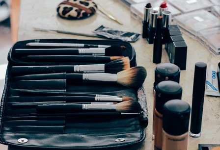
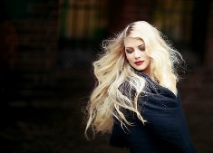
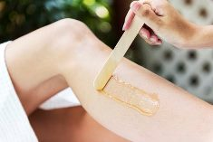
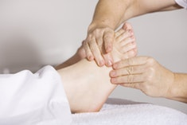
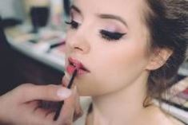
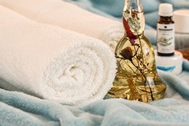
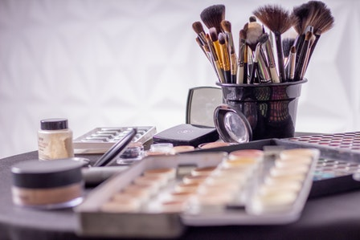

Studio de Beleza Lu Hammer
O Studio de Beleza Lu Hammer,é um salão de beleza completo, que tem como grande diferencial a harmonia entre o espaço e seus clientes. Além da excelência no atendimento, o equilíbrio entre conforto e sofisticação evidenciam a personalidade única do local
Produtos
Nos do Studio de Beleza Lu Hammer buscamos o que a de melhor no mercado para atender seus clientes, tanto na aérea de Cabelos quanto na aérea para unhas e pés, não esquecendo da parte das maquiagens e produtos para pele.
Serviços
Cabelos
Cabelos o que da moldura a seu rosto e muito bem cuidado aqui!
Espaço Homem
Os homens também tem seu espaço garantindo com cortes masculinos limpezas de pele e brabearia.
Depilação
Depilação é mais do que um cuidado com a aparência. É um procedimento para deixar a pele lisa e bem tratada.
Mãos e Pés
Conforto, higiene e equipe super experiente definem nossa área de manicures e pedicures..
Maquiagem
Para uma grande festa ou evento cotidiano, a make up tem que ser impecável..
Estetica
Aliados fundamentais da beleza, nossos serviços estéticos são simplesmente completos.
Produtos
Um trabalho perfeito depende de excelentes técnicas e de produtos igualmente superiores.
Dia da noiva
Em um dia único, nossa sala VIP estará especialmente decorada para recebê-la.
Dia da Noiva
O dia de noiva tem início muito antes da data do evento. A partir de um atendimento personalizado, ouvimos seus sonhos e expectativas e os traduzimos em uma programação de rituais de beleza que a deixem tranquila, linda e confiante.